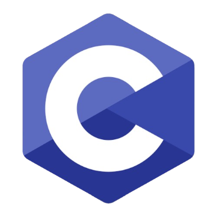

Módulo 1 - Introdução à Programação em C
Bem vindo ao Módulo 1. Domine os conceitos fundamentais da linguagem C com este módulo introdutório. Aprenda desde a história e importância da linguagem até a criação e execução do seu primeiro programa. Ideal para iniciantes, este módulo estabelece as bases sólidas para seu desenvolvimento como programador.
- O que é a linguagem C?
- Por que aprender C?
- História e Curiosidades
- Instalando o Dev C++
- Primeiro Programa em C
- Compilação e Execução
O que é a linguagem C?
A linguagem C é uma das mais importantes da programação e continua sendo a base do ensino de computação em muitas universidades. Ela é estruturada, rápida e oferece controle direto sobre o hardware, sendo ideal para sistemas embarcados, jogos e sistemas operacionais. Aprender C ajuda a entender a lógica de programação e os fundamentos da computação.
- Estruturada: Organização clara do código
- Rápida: Execução eficiente
- Baixo nível: Controle direto do hardware
Ideal para sistemas embarcados, jogos e sistemas operacionais. Aprender C ajuda a entender a lógica de programação e os fundamentos da computação.
Logo da Linguagem C
Por que aprender a programar em C?
⚡️Eficiência
C permite código otimizado e rápido, ideal para sistemas críticos com alta demanda por desempenho.
🎮Controle
Permite acesso direto à memória, controle preciso e uso eficaz dos recursos do sistema.
🎯Base
Aprenda C e compreenda como computadores processam dados — base para outras linguagens.
História e Curiosidades
Criação por Dennis Ritchie
Desenvolvida nos laboratórios Bell para implementar o sistema UNIX. A linguagem C se tornou uma das mais influentes da computação
Padronização ANSI C
Primeiro padrão oficial da linguagem. Portável, rápida e eficiente, permite controle direto sobre o hardware e foi padronizada como ANSI C.
Uso Contínuo
Base para sistemas operacionais, drivers e aplicações críticas. Ainda usada em sistemas como servidores e Android, a linguagem C inspirou C++, Java, C# e Python. Aprender C é dominar a base por trás das linguagens modernas.
Instalando uma IDE
IDE (Integrated Development Environment)
Ambiente de Desenvolvimento Integrado. Essencial para organizar seu código, compilar e testar programas com mais praticidade.
Compilador GCC
Pacote MinGW incluso no Dev-C++. Responsável por transformar seu código-fonte em arquivos executáveis compreendidos pelo computador.
Dev - C++
Interface gráfica para escrever, compilar e depurar código. Integra o compilador GCC e facilita o desenvolvimento, ideal para quem está começando em C.
Tutorial: Como Instalar o Dev-C++
Seu Primeiro Código
#include <stdio.h>
int main() {
printf("Hello, World!\n");
return 0;
}
Explicação do Código
-
#include <stdio.h> Biblioteca para entrada/saída
-
int main() {} Função principal
-
printf Exibe texto na tela
-
return 0; Indica sucesso
Como Compilar e Executar?
No Dev-C++
- Clique em "Arquivo > Novo > Projeto"
- Selecione "Console Application"
- Escreva seu código
- Pressione F11 para compilar e executar
No Terminal
gcc programa.c -o programa
./programaOnline
Caso você não possua um dispositivo compatível com a IDE Dev-C++, existe a possibilidade de programar de maneira online, entretanto, ocorrerão limitações dependendo da utilização.
Acesse o Compilador OnlineConclusão
O que foi aprendido no Módulo 1
- Fundamentos da linguagem C - História, características e aplicações
- Ambiente de desenvolvimento - Como instalar e configurar o Dev-C++
- Estrutura básica - Componentes essenciais de um programa em C
- Primeiro programa - Criação e execução do "Hello World"
- Compilação - Processo de transformar código em executável
- Saída básica - Uso da função printf() para exibir mensagens